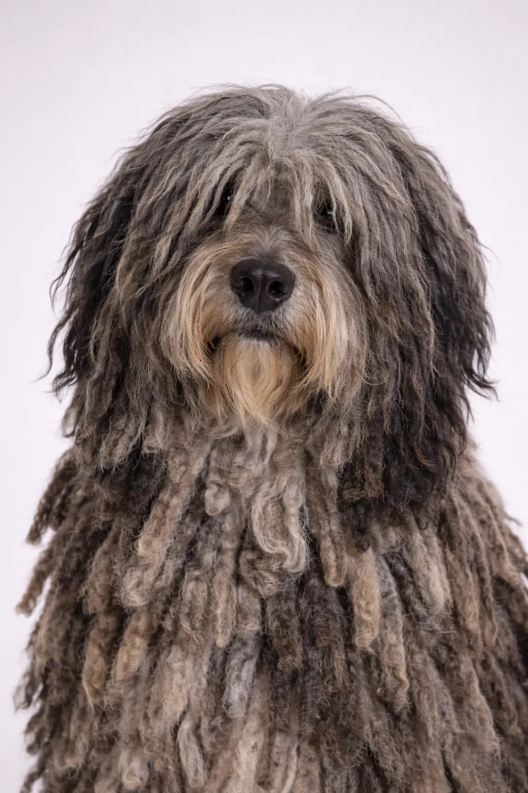

Bergamasco Sheepdog
Conocido por su pelaje único que forma mechones naturales llamados "flocks", el Bergamasco es un perro pastor paciente e inteligente de los Alpes italianos.
Puntuaciones de la Raza
Temperamento
Descripción
El Bergamasco Sheepdog es una raza antigua originaria de los Alpes italianos, conocida por su distintivo pelaje que forma mechones fieltrados naturales llamados "flocks". Este pelaje único se desarrolló para protegerlos del clima frío de las montañas y de los depredadores. Son perros musculosos y bien proporcionados que han trabajado como pastores durante siglos.
Temperamento
El Bergamasco es conocido por ser paciente, inteligente y dispuesto a complacer. Son excelentes con los niños, mostrando una paciencia natural que los hace maravillosas mascotas familiares. Su inteligencia y deseo de cooperar hacen que el entrenamiento sea agradable. La socialización temprana les ayuda a desarrollarse como compañeros equilibrados. Son protectores pero no agresivos.
Salud
Generalmente saludables con una esperanza de vida de 13-15 años. Las preocupaciones comunes incluyen displasia de cadera y torsión gástrica. Los chequeos veterinarios regulares y la atención preventiva son importantes. A pesar de su apariencia, el pelaje fieltrado no requiere cepillado una vez formado, solo mantenimiento ocasional. Mantener un peso saludable ayuda a prevenir problemas articulares.
Ejercicio
Necesidades de ejercicio moderadas con paseos diarios y sesiones de juego regulares. Disfrutan de una combinación de actividad física y tiempo de relajación. Los juegos interactivos y sesiones de entrenamiento proporcionan estimulación mental. Una rutina de ejercicio constante los mantiene saludables y felices. Son menos demandantes que otras razas de pastoreo en términos de actividad.
⦿ ¿Es Esta Raza Adecuada para Ti?
✓ Ideal Para
- Familias con niños
- Quienes buscan una raza única
- Dueños pacientes
- Climas fríos o templados
✗ No Ideal Para
- Climas muy calurosos
- Quienes prefieren perros de apariencia tradicional
- Residentes de apartamentos pequeños
Nuestro Veredicto: El Bergamasco es un perro pastor único y fascinante con un pelaje distintivo y un temperamento maravilloso. Son pacientes, inteligentes y excelentes con las familias, especialmente aquellas con niños.